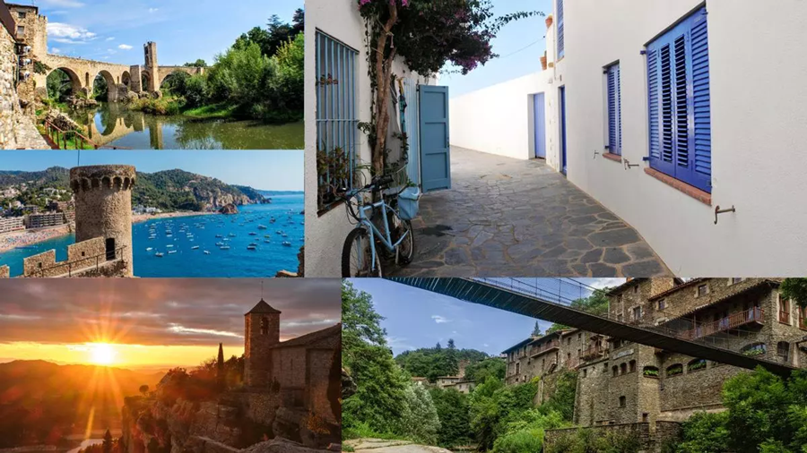

Los pueblos más bonitos de Cataluna
...según encuesta a blogueros de viaje

Esta ha sido una iniciativa de los chicos del blog MilViatges (donde hay más pueblos referenciados).
El resultado de los 10 primeros pueblos ganadores se muestra en este site. ¡Agrega el tuyo!
- Próximo Destino. (Meritxell Beltrán): Les Cases d'Alcanar
- Petits Viatgers. (Montse Delgado): Siurana
- Un viaje de libros. (Silvia Monasterio): Calella de Pallafrugell
- 365 sábados viajando. (Virginia y Fran): Tossa de Mar
- Apuntes de viaje-blog privado. (María Teresa Trilla): Prades
- Con arena en la mochila. (Robert y Eli): Besalú
- Cómete el mundo. (Henar y Aitor): Pals
- Quaderns de bitàcola. (Cèlia y Enric): Montblanc
- Viatges Pedraforca. (Daniel): Castellar de n'Hug,
- Estem de vacances. (Xavi y Txell): Peratallada
...